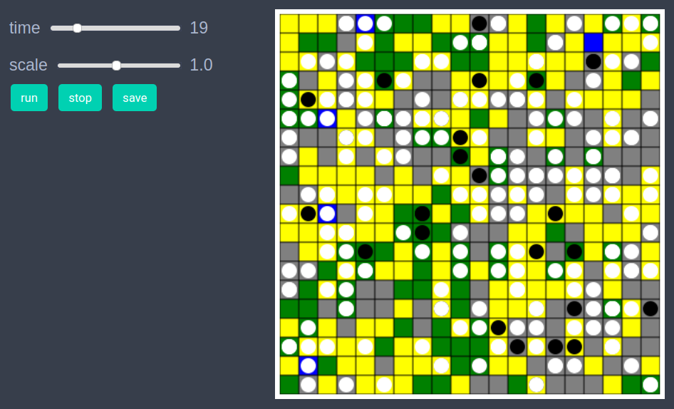
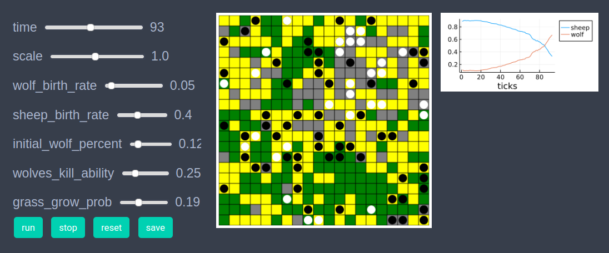
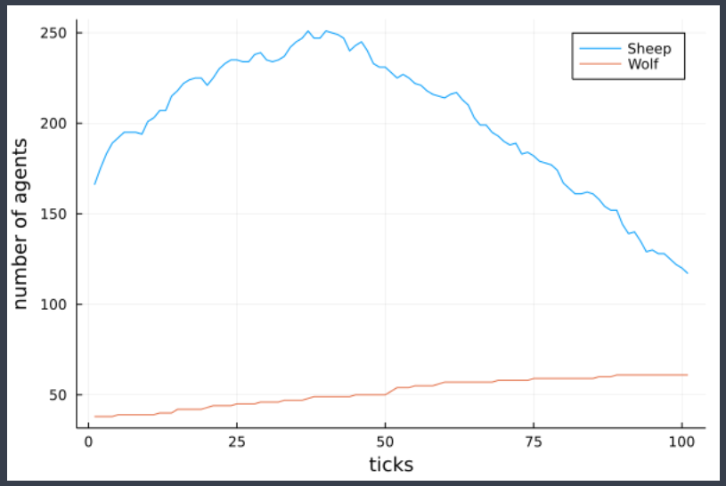

Predator-prey model
using EasyABMStep 1: Create Agents and Model
We create 200 agents all of type sheep to begin with. Our model parameters are
max_energy: The maximum energy that an agent (sheep or wolf) can have.wolf_birth_rate: Probability of a wolf agent to reproduce once its energy is greater than max_energy/2.sheep_birth_rate: Probability of a sheep agent to reproduce once its energy is greater than max_energy/2.wolves_kill_ability: The probability of a wolf to kill a neighboring sheep.grass_grow_prob: The probability of one unit of grass growing on a patch at a given timestep.max_grass: Max grass a patch can have.initial_wolf_percent: The percent of agents which are wolf initially.
@enum agenttype sheep wolf
agents = grid_2d_agents(200, pos = Vect(1,1), color = cl"white", atype = sheep,
energy = 10.0, keeps_record_of=Set([:pos, :energy ]))
model = create_2d_model(agents,
size = (20,20), #space size
agents_type = Mortal, # agents are mortal, can take birth or die
space_type = NPeriodic, # nonperiodic space
# below are all the model parameters
max_energy = 50,
wolf_birth_rate = 0.01,
sheep_birth_rate = 0.1,
wolves_kill_ability = 0.2,
max_grass = 5,
initial_wolf_percent = 0.2,
grass_grow_prob = 0.2)Step 2: Initialise the model
In the second step we initialise the patches and agents by defining initialiser! function and sending it as an argument to init_model!. In the initialiser! function we randomly set amount of grass and accordingly color of each patch. We also set a fraction initial_wolf_percent of agents to be of type wolf. We set color of sheeps to white and that of wolves to black. We also randomly set the energy and positions of agents. In the init_model! function through argument props_to_record we tell EasyABM to record the color property of patches during model run.
function initialiser!(model)
max_grass = model.parameters.max_grass
for j in 1:model.size[2]
for i in 1:model.size[1]
grass = rand(1:max_grass)
model.patches[i,j].grass = grass
hf = Int(ceil(max_grass/2))
model.patches[i,j].color = grass > hf ? cl"green" : (grass > 0 ? cl"blue" : cl"grey")
end
end
for agent in model.agents
if rand()< model.parameters.initial_wolf_percent
agent.atype = wolf
agent.color = cl"black"
else
agent.atype = sheep
agent.color = cl"white"
end
agent.energy = rand(1:model.parameters.max_energy)+0.0
agent.pos = Vect(rand(1:model.size[1]), rand(1:model.size[2]))
end
end
init_model!(model, initialiser = initialiser!, props_to_record = Dict("patches"=>Set([:color])))Step 3: Defining the step_rule! and running the model
In this step we implement the step logic of the predator prey model in the step_rule! function and run the model for 100 steps.
function change_pos!(agent)
dx = rand(-1:1)
dy = rand(-1:1)
agent.pos += Vect(dx, dy)
end
function reproduce!(agent, model)
new_agent = create_similar(agent)
agent.energy = agent.energy/2
new_agent.energy = agent.energy
add_agent!(new_agent, model)
end
function eat_sheep!(wolf, sheep, model)
kill_agent!(sheep, model)
wolf.energy+=1
end
function act_asa_wolf!(agent, model)
if !(is_alive(agent))
return
end
energy = agent.energy
if energy > 0.5*model.parameters.max_energy
if rand()<model.parameters.wolf_birth_rate
reproduce!(agent, model)
end
elseif energy > 0
nbrs = collect(neighbors_moore(agent, model, 1))
n = length(nbrs)
if n>0
nbr = nbrs[rand(1:n)]
if (nbr.atype == sheep)&&(is_alive(nbr))
ability = model.parameters.wolves_kill_ability
(rand()<ability)&&(eat_sheep!(agent, nbr, model))
end
end
change_pos!(agent)
else
kill_agent!(agent, model)
end
end
function act_asa_sheep!(agent, model)
if !(is_alive(agent))
return
end
energy = agent.energy
if energy >0.5* model.parameters.max_energy
if rand()<model.parameters.sheep_birth_rate
reproduce!(agent, model)
end
change_pos!(agent)
elseif energy > 0
patch = get_grid_loc(agent)
grass = model.patches[patch...].grass
if grass>0
model.patches[patch...].grass-=1
agent.energy +=1
end
change_pos!(agent)
else
kill_agent!(agent, model)
end
end
function step_rule!(model)
if model.max_id>800 # use some upper bound on max agents to avoid system hang
return
end
for agent in model.agents
if agent.atype == wolf
act_asa_wolf!(agent,model)
end
if agent.atype == sheep
act_asa_sheep!(agent, model)
end
end
for j in 1:model.size[2]
for i in 1:model.size[1]
patch = model.patches[i,j]
grass = patch.grass
max_grass = model.parameters.max_grass
if grass < max_grass
if rand()<model.parameters.grass_grow_prob
patch.grass+=1
hf = Int(ceil(max_grass/2))
patch.color = grass > hf ? cl"green" : (grass > 0 ? cl"yellow" : cl"grey")
end
end
end
end
end
run_model!(model, steps=100, step_rule = step_rule! )Step 4: Visualisation
In order to draw the model at a specific frame, say 4th, one can use draw_frame(model, frame = 4, show_patches=true). If one wants to see the animation of the model run, it can be done as
animate_sim(model, show_patches=true)
After defining the step_rule! function we can also choose to create an interactive application (which currently works in Jupyter with WebIO installation) as
create_interactive_app(model, initialiser= initialiser!,
step_rule= step_rule!,
model_controls=[
(:wolf_birth_rate, "slider", 0:0.01:1.0),
(:sheep_birth_rate, "slider", 0.01:0.01:1.0),
(:initial_wolf_percent, "slider", 0.01:0.01:0.9),
(:wolves_kill_ability, "slider", 0.01:0.01:1.0),
(:grass_grow_prob, "slider", 0.01:0.01:0.5)
],
agent_plots=Dict("sheep"=> agent-> agent.atype == sheep ? 1 : 0,
"wolf"=> agent-> agent.atype == wolf ? 1 : 0),
frames=200, show_patches=true)
Step 4: Fetch Data
We can fetch the number of wolves and sheeps at each time step as follows.
df = get_nums_agents(model, agent-> agent.atype == sheep,
agent->agent.atype == wolf, labels=["Sheep", "Wolf"],
plot_result = true)
Individual agent data recorded during model run can be obtained as
df = get_agent_data(model.agents[1], model).recordReferences
- Wilensky, U. (1997). NetLogo Wolf Sheep Predation model. http://ccl.northwestern.edu/netlogo/models/WolfSheepPredation. Center for Connected Learning and Computer-Based Modeling, Northwestern University, Evanston, IL.